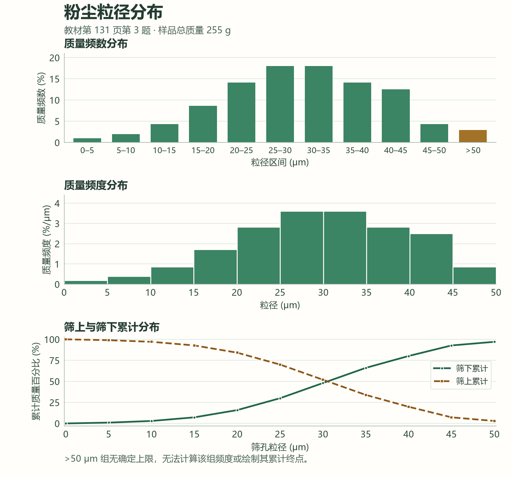

显示 19 / 19 题
没有符合条件的题目。可更换关键词或选择其他章节。
第一章 · 大气污染及控制概况
P23 第 4 题大气污染联防联控
简述大气污染联防联控制度，并说明为什么需要实施区域协同治理。
（1）大气污染联防联控制度
大气污染联防联控是指针对大气污染的区域性、复合性和跨界传输特点，打破行政区域界限，由多个地区及相关部门共同开展大气污染防治的制度。
其主要内容包括：
① 建立区域协调机制：统筹协调重点区域内的大气污染防治工作。
② 实行联合监管：建立联席会议、联合执法监管和重大项目环境影响评价会商机制。
③ 加强信息共享：建立统一的区域空气质量监测体系，实现监测数据与污染信息共享。
④ 开展预警应急联动：建立区域污染预警和应急机制，共同应对重污染天气。
（2）实施的必要性
① 大气污染具有跨区域传输性：污染物可随大气运动扩散至其他地区，单一地区治理难以取得理想效果。
② 大气污染具有复合性：多种污染物相互作用，形成二次细颗粒物和臭氧等污染物，需要区域协同治理。
③ 传统属地治理存在局限性：以行政区划为界限的独立治理模式，难以有效解决区域性大气污染问题。
④ 提高污染治理效率：通过统一规划、协调减排和联合执法，降低治理成本，改善区域整体空气质量。
综上，大气污染联防联控是解决区域性、复合型大气污染问题，实现区域空气质量持续改善的重要制度。
教材依据：第1章1.2节及1.3.3.3节。
P23 第 5 题超低排放控制
什么是超低排放控制？
超低排放控制是指通过采用先进的大气污染治理技术及多污染物协同控制工艺，使工业生产过程中排放的颗粒物、二氧化硫（SO₂）、氮氧化物（NOₓ）等污染物浓度达到比常规排放标准更加严格的超低排放要求。
其主要特点包括：
① 多污染物协同控制：综合考虑脱硝、除尘、脱硫等系统的协同作用，实现多种污染物的高效脱除。
② 多种技术组合优化：通过低氮燃烧、选择性催化还原（SCR）脱硝、电除尘、湿法脱硫及湿式电除尘等技术的组合，实现烟气深度净化。
③ 降低污染物排放浓度：通过高效治理设备及工艺优化，进一步减少污染物排放，改善环境空气质量。
教材语境下，燃煤电厂的典型超低排放控制值为：
| 污染物 | 排放浓度限值 |
|---|---|
| 颗粒物 | ≤10 mg/m³ |
| 二氧化硫（SO₂） | ≤35 mg/m³ |
| 氮氧化物（NOₓ） | ≤50 mg/m³ |
注：上述数值为燃煤电厂典型超低排放要求（基准氧含量6%），并非所有工业行业通用的限值。
综上，超低排放控制的核心是通过多种污染治理技术的协同与优化组合，实现大气污染物的深度削减。
教材依据：第1章1.5节“大气污染控制技术概况”。
第三章 · 除尘技术及装置
P131 第 3 题粉尘粒径分布与累计曲线
将粉尘按 0～5、5～10、10～15、15～20、20～25、25～30、30～35、35～40、40～45、45～50、＞50 μm 分组，各组质量依次为 2.5、5、11、22、36、46、46、36、32、11、7.5 g。判断分布形态，计算质量频数、频度及筛上、筛下累计分布并绘图。
（1）判断该种粉尘粒径分布属于哪一种形态分布
教材 P404 参考答案为对数正态分布。用题给数据检验时，将 5～50 μm 各组上界的筛下累计比例转成标准正态分位数，所得分位数对粒径的线性拟合 R²≈0.999，对粒径对数的拟合 R²≈0.893。这组数据在普通正态概率图上更接近直线，因此这里同时列出教材参考判断和数据检验结果。
（2）计算频数、频度、筛上和筛下累计分布，并绘图
① 计算总质量
\[ m_0=\sum \Delta m_i=255\ \mathrm{g} \]
② 计算公式
质量频数分布：
\[ \Delta D_i=\frac{\Delta m_i}{m_0}\times100\% \]
质量频度分布：
\[ f_i=\frac{\Delta D_i}{\Delta d_{p,i}} \]
筛下累计分布：
\[ D_i=\sum_{j=1}^{i}\Delta D_j \]
筛上累计分布：
\[ R_i=100\%-D_i \]
③ 计算结果
以下累计值均以各粒径区间的上限为界。
| 粒径（μm） | 质量（g） | 频数ΔD（%） | 频度f（%/μm） | 筛下D（%） | 筛上R（%） |
|---|---|---|---|---|---|
| 0～5 | 2.5 | 0.98 | 0.20 | 0.98 | 99.02 |
| 5～10 | 5 | 1.96 | 0.39 | 2.94 | 97.06 |
| 10～15 | 11 | 4.31 | 0.86 | 7.25 | 92.75 |
| 15～20 | 22 | 8.63 | 1.73 | 15.88 | 84.12 |
| 20～25 | 36 | 14.12 | 2.82 | 30.00 | 70.00 |
| 25～30 | 46 | 18.04 | 3.61 | 48.04 | 51.96 |
| 30～35 | 46 | 18.04 | 3.61 | 66.08 | 33.92 |
| 35～40 | 36 | 14.12 | 2.82 | 80.20 | 19.80 |
| 40～45 | 32 | 12.55 | 2.51 | 92.75 | 7.25 |
| 45～50 | 11 | 4.31 | 0.86 | 97.06 | 2.94 |
| ＞50 | 7.5 | 2.94 | — | 100.00* | 0.00* |
| 合计 | 255 | 100.00 | — | — | — |
注：最后一组为开放区间，无法确定组距，所以不能直接计算频度。带*的累计值表示包含所有粒径时的最终累计结果，而非50 μm处的值。
④ 粒径分布图

由图可知，质量频度在25～35 μm区间达到最大值，筛下累计分布随粒径增加而增大，筛上累计分布则逐渐减小，两者之和始终为100%。
P131 第 4 题分级除尘效率与总除尘效率
除尘器进、出口含尘浓度分别为 3 200、480 mg/m³。按 0～5、5～10、10～20、20～40、＞40 μm 分组，进口质量频数分别为 20%、10%、15%、20%、35%，出口分别为 78%、14%、7.4%、0.6%、0%。计算各粒径组及整台设备的除尘效率。
已知条件：
进口粉尘浓度：
\[ C_i=3200\ \mathrm{mg/m^3} \]
出口粉尘浓度：
\[ C_o=480\ \mathrm{mg/m^3} \]
（1）计算总除尘效率
根据总除尘效率公式，在进出口气体体积流量相同的条件下：
\[ \eta=1-\frac{C_o}{C_i} \]
代入数据：
\[ \eta=\left(1-\frac{480}{3200}\right)\times100\% \]
\[ \boxed{\eta=85\%} \]
（2）计算分级除尘效率
分级除尘效率公式：
\[ \eta_j=\left(1-\frac{C_o\Delta D_{o,j}}{C_i\Delta D_{i,j}}\right)\times100\% \]
式中：
- \(\Delta D_{i,j}\)：第 \(j\) 粒径组的进口质量频数；
- \(\Delta D_{o,j}\)：第 \(j\) 粒径组的出口质量频数。
① 0～5 μm
\[ \eta_1=\left(1-\frac{480\times78}{3200\times20}\right)\times100\% =\boxed{41.50\%} \]
② 5～10 μm
\[ \eta_2=\left(1-\frac{480\times14}{3200\times10}\right)\times100\% =\boxed{79.00\%} \]
③ 10～20 μm
\[ \eta_3=\left(1-\frac{480\times7.4}{3200\times15}\right)\times100\% =\boxed{92.60\%} \]
④ 20～40 μm
\[ \eta_4=\left(1-\frac{480\times0.6}{3200\times20}\right)\times100\% =\boxed{99.55\%} \]
⑤ ＞40 μm
由于出口该粒径组质量频数为0：
\[ \eta_5=\left(1-\frac{480\times0}{3200\times35}\right)\times100\% =\boxed{100\%} \]
（3）最终计算结果
| 粒径范围（μm） | 分级除尘效率 |
|---|---|
| 0～5 | 41.50% |
| 5～10 | 79.00% |
| 10～20 | 92.60% |
| 20～40 | 99.55% |
| ＞40 | 100.00% |
| 总除尘效率 | 85.00% |
结论： 该除尘器的总除尘效率为85%。随着粉尘粒径增大，分级除尘效率逐渐提高，说明该除尘器对大颗粒粉尘的捕集效果明显优于小颗粒粉尘。
注：第4题未提供进出口气体流量，以上按两者相同、无明显漏风的通常习题假设计算。
教材 P404 将总效率印为 50%。在进出口气量相同的假设下，用浓度比计算或按进口各组频数对分级效率加权，均得 85%。
P131 第 6 题（1）重力沉降室设计
烟气在 150 ℃ 下的体积流量为 3 000 m³/h，气体动力黏度为 2.4×10⁻⁵ Pa·s，烟尘真密度为 2 150 kg/m³。忽略气体密度，按室内水平气速 0.28 m/s、室高 1.5 m，设计可完全捕集 35 μm 及以上粉尘的水平气流重力沉降室。
已知条件：
- 烟气流量：\(Q=3000\,\mathrm{m^3/h}\)
- 烟气温度：\(t_s=150℃\)
- 烟尘真密度：\(\rho_p=2150\,\mathrm{kg/m^3}\)
- 烟气动力黏度：\(\mu_g=2.4\times10^{-5}\,\mathrm{Pa\cdot s}\)
- 沉降室水平气流速度：\(v=0.28\,\mathrm{m/s}\)
- 沉降室高度：\(H=1.5\,\mathrm m\)
- 要求完全去除的最小粒径：\(d_p=35\,\mu\mathrm m=3.5\times10^{-5}\,\mathrm m\)
忽略气体密度，设计水平气流重力沉降室。
（1）计算粉尘的沉降速度
根据斯托克斯定律：
\[ u_s=\frac{(\rho_p-\rho_g)gd_p^2}{18\mu_g} \]
忽略气体密度：
\[ u_s=\frac{\rho_pgd_p^2}{18\mu_g} \]
代入数据：
\[ u_s=\frac{2150\times9.81\times(3.5\times10^{-5})^2}{18\times2.4\times10^{-5}} \]
得到：
\[ \boxed{u_s=0.0598\,\mathrm{m/s}} \]
（2）计算沉降室长度
要保证35 μm及以上的粉尘全部沉降，需要满足：
\[ \frac Lv\geq\frac H{u_s} \]
因此，沉降室最小长度：
\[ L=\frac{vH}{u_s} \]
代入：
\[ L=\frac{0.28\times1.5}{0.0598} \]
\[ \boxed{L\approx7.02\,\mathrm m} \]
（3）计算沉降室宽度
由气体流量公式：
\[ Q=vBH \]
其中，\(B\)为沉降室宽度。
将烟气流量换算为m³/s：
\[ Q=\frac{3000}{3600}=0.8333\,\mathrm{m^3/s} \]
则：
\[ B=\frac Q{vH} \]
\[ B=\frac{0.8333}{0.28\times1.5} \]
\[ \boxed{B\approx1.98\,\mathrm m} \]
（4）确定沉降室尺寸
计算得到的理论最小尺寸为：
| 项目 | 计算结果 |
|---|---|
| 长度 \(L\) | 7.02 m |
| 宽度 \(B\) | 1.98 m |
| 高度 \(H\) | 1.50 m |
| 粉尘沉降速度 \(u_s\) | 0.0598 m/s |
实际设计时，可适当留有余量，取：
\[ L=7.1\,\mathrm m,\quad B=2.0\,\mathrm m,\quad H=1.5\,\mathrm m \]
答：
该重力沉降室的理论最小尺寸为：
\[ \boxed{L\times B\times H=7.02\,\mathrm m\times1.98\,\mathrm m\times1.50\,\mathrm m} \]
工程设计可取 7.1 m × 2.0 m × 1.5 m，在理想均匀流动和重力沉降条件下，可满足完全去除粒径不小于35 μm粉尘的要求。实际运行还应考虑气流扰动及粉尘二次扬起等因素。
依据：《大气污染控制工程》（第三版），第3章3.2.1.1节“重力沉降室”及第131页习题6（1）。
关联题 · 哪些因素影响降尘室的除尘能力？
分享回顾中还提到这道简答题。理想水平气流沉降室中，粒子的分级效率取决于沉降速度 \(u_s\)、平面面积 \(LB\) 与气量 \(Q\)，可写成 \(\eta_d=\min(1,u_s LB/Q)\)。粒径大、颗粒与气体的密度差大时，颗粒更易沉降。增加沉降面积、降低处理气量、改善气流分布也有助于提高捕集效率，实际还应控制积灰再扬起。
P132 第 10 题文丘里洗涤器的高捕集效率
从粉尘与液滴的惯性碰撞出发，分析文丘里洗涤器为何具有较高的粉尘捕集效率。
答：
文丘里洗涤器是一种高效湿式除尘设备，其捕集效率高的主要原因如下：
（1）气液相对速度大。 含尘气体经过收缩管进入喉管时，流速急剧增加，气体与液滴之间形成较大的相对速度。由于粉尘具有惯性，难以随气流绕过液滴，因而更容易与液滴发生碰撞并被捕集。
（2）液滴雾化程度高。 高速气流将洗涤液破碎成大量细小液滴，增大气液接触面积，同时增强惯性碰撞和拦截作用，提高除尘效率。
（3）粉尘凝聚作用强。 在喉管内，粉尘与液滴及粉尘之间发生碰撞、润湿和凝聚，形成较大的含尘液滴，有利于后续分离。
（4）气液分离效果好。 含尘液滴进入脱水器后，通过重力、离心力等作用从气流中分离，实现粉尘的有效去除。
综上，文丘里洗涤器通过提高气液相对速度、强化液滴雾化和惯性碰撞，并结合凝聚与脱水过程，实现较高的粉尘捕集效率。
P132 第 18 题电除尘器对不同粒径的捕集效率
电除尘器对 10 μm 粒子的理论捕集效率为 99%。在设备和运行工况相同的条件下，用德意希公式估算对 5 μm 粒子的理论捕集效率。
解：
由德意希公式：
\[ \eta=1-\exp\left(-\frac{A\omega}{Q}\right) \]
式中，\(A\)为集尘极面积，\(\omega\)为粒子驱进速度，\(Q\)为气体流量。
根据电场荷电理论，饱和荷电量与粒径平方成正比：
\[ q_s\propto d_p^2 \]
由驱进速度公式：
\[ \omega=\frac{qEC_u}{3\pi\mu_gd_p} \]
可知，在相同工况下：
\[ \omega\propto d_pC_u \]
肯宁汉修正系数为：
\[ C_u=1+\frac{0.17}{d_p} \]
其中粒径单位为μm。
对于10 μm粒子：
\[ C_{u,10}=1+\frac{0.17}{10}=1.017 \]
对于5 μm粒子：
\[ C_{u,5}=1+\frac{0.17}{5}=1.034 \]
因此：
\[ \frac{\omega_5}{\omega_{10}} =\frac{5\times1.034}{10\times1.017} =0.5084 \]
由德意希公式：
\[ 1-\eta_{10}=\exp\left(-\frac{A\omega_{10}}Q\right) \]
\[ 1-\eta_5=(1-\eta_{10})^{0.5084} \]
代入 \(\eta_{10}=99\%\)：
\[ \eta_5=1-(1-0.99)^{0.5084} \]
\[ \eta_5=0.9038 \]
答：
\[ \boxed{\eta_5\approx90.4\%} \]
即该电除尘器对5 μm粒子的理论捕集效率约为90.4%。
P132 第 19 题单通道电除尘器增大气量后的效率
单通道板式电除尘器高 5 m、长 6 m，两极板间距 0.3 m。气量为 6 000 m³/h 时，进、出口浓度分别为 9.3、0.5208 g/m³。气量增加至 9 000 m³/h 后，求除尘效率。
已知：
- 通道高度 \(H=5\,\mathrm m\)
- 通道长度 \(L=6\,\mathrm m\)
- 集尘极板间距 \(b=0.3\,\mathrm m\)
- 原气量 \(Q_1=6000\,\mathrm{m^3/h}\)
- 新气量 \(Q_2=9000\,\mathrm{m^3/h}\)
- 进口浓度 \(C_i=9.3\,\mathrm{g/m^3}\)
- 出口浓度 \(C_o=0.5208\,\mathrm{g/m^3}\)
解：
（1）计算原除尘效率：
\[ \eta_1=1-\frac{C_o}{C_i} =1-\frac{0.5208}{9.3} =0.944 \]
即：
\[ \eta_1=94.4\% \]
（2）计算集尘极面积：
单通道两侧均为集尘极：
\[ A=2HL=2\times5\times6=60\,\mathrm{m^2} \]
（3）计算有效驱进速度：
由德意希公式：
\[ \eta=1-\exp\left(-\frac{A\omega_p}{Q}\right) \]
可得：
\[ \omega_p=-\frac{Q_1}{A}\ln(1-\eta_1) \]
代入：
\[ \omega_p=-\frac{6000/3600}{60}\ln(1-0.944) \]
\[ \omega_p\approx0.0801\,\mathrm{m/s} \]
（4）计算新气量下的除尘效率：
假设有效驱进速度保持不变：
\[ \eta_2=1-\exp\left(-\frac{A\omega_p}{Q_2}\right) \]
\[ \eta_2=1-\exp\left(-\frac{60\times0.0801}{9000/3600}\right) \]
\[ \eta_2\approx0.8536 \]
答：
\[ \boxed{\eta_2\approx85.4\%} \]
即处理气量增加至9000 m³/h时，除尘效率约为85.4%。
按未中间取整的数据复算得到 85.36%。教材 P404 参考值为 85.3%。
P132 第 20 题板式电除尘器出口浓度与变工况效率
一板式电除尘器极板间距 300 mm，气量为 6 000 m³/h 时效率为 95.4%，入口浓度为 9.0 g/m³。求该工况下的出口浓度，并估算气量增至 8 600 m³/h 后的效率。
已知：
\[ Q_1=6000\,\mathrm{m^3/h} \]
\[ Q_2=8600\,\mathrm{m^3/h} \]
\[ \eta_1=95.4\%=0.954 \]
\[ C_i=9.0\,\mathrm{g/m^3} \]
解：
（1）计算出口含尘气体浓度。
由总除尘效率公式：
\[ \eta_1=1-\frac{C_o}{C_i} \]
可得：
\[ C_o=C_i(1-\eta_1) \]
\[ C_o=9.0\times(1-0.954) \]
\[ \boxed{C_o=0.414\,\mathrm{g/m^3}} \]
即414 mg/m³。
（2）计算气量增加后的除尘效率。
根据德意希公式：
\[ 1-\eta=\exp\left(-\frac{A\omega_p}{Q}\right) \]
假设集尘面积与有效驱进速度不变，则有：
\[ \ln(1-\eta_2)=\frac{Q_1}{Q_2}\ln(1-\eta_1) \]
因此：
\[ \eta_2=1-(1-\eta_1)^{Q_1/Q_2} \]
代入：
\[ \eta_2=1-(1-0.954)^{6000/8600} \]
\[ \eta_2=1-0.046^{0.6977} \]
\[ \eta_2\approx0.8833 \]
答：
（1）出口含尘气体浓度：
\[ \boxed{C_o=0.414\,\mathrm{g/m^3}} \]
（2）气量增加至8600 m³/h时：
\[ \boxed{\eta_2\approx88.3\%} \]
教材 P404 参考答案的第（1）问浓度单位存在印刷错误，按量纲应为 g/m³。
P133 第 26 题袋式除尘器过滤速度和粉尘负荷
袋式除尘器有 2 个室，每室 3 排、每排 12 只滤袋。滤袋长 5 m，直径 0.2 m。处理含尘气体 6.0 m³/s，粉尘浓度为 4.5 g/m³。求过滤速度及滤袋单位面积的堆积粉尘负荷。
已知：
- 气量 \(Q=6.0\,\mathrm{m^3/s}\)
- 粉尘浓度 \(c=4.5\,\mathrm{g/m^3}\)
- 滤袋长度 \(L=5\,\mathrm m\)
- 滤袋直径 \(d=0.2\,\mathrm m\)
- 2个室，每室3排，每排12只滤袋
解：
（1）计算滤袋总数量。
\[ n=2\times3\times12=72\text{只} \]
（2）计算总过滤面积。
单只滤袋的有效过滤面积按圆柱侧面积计算：
\[ A_1=\pi dL \]
\[ A_1=\pi\times0.2\times5 \approx3.142\,\mathrm{m^2} \]
总过滤面积：
\[ A=nA_1=72\times3.142 \]
\[ A\approx226.19\,\mathrm{m^2} \]
（3）计算过滤速度。
根据过滤速度公式：
\[ v=\frac QA \]
\[ v=\frac6{226.19}=0.02653\,\mathrm{m/s} \]
换算为m/min：
\[ v=0.02653\times60 \]
\[ \boxed{v\approx1.59\,\mathrm{m/min}} \]
（4）计算堆积粉尘负荷。
由教材公式：
\[ m_d=cvt \]
式中，\(t\)为过滤时间。若取单位为min，并假设进入滤袋的粉尘全部被捕集：
\[ m_d=4.5\times1.5915\times t \]
\[ \boxed{m_d=7.16t\,\mathrm{g/m^2}} \]
其中 \(t\) 的单位为min。
题目没有给出过滤时间，因此只能求出堆积粉尘负荷随时间变化的表达式。
例如，过滤1小时：
\[ m_d=7.16\times60=429.6\,\mathrm{g/m^2} \]
即：
\[ m_d\approx0.430\,\mathrm{kg/m^2} \]
答：
过滤速度：
\[ \boxed{v=1.59\,\mathrm{m/min}} \]
堆积粉尘负荷：
\[ \boxed{m_d=7.16t\,\mathrm{g/m^2}} \]
其中 \(t\) 为两次清灰之间的过滤时间（min）。
教材 P405 将过滤速度写为 1.59 m/s，按题给气量和过滤面积换算，单位应为 m/min。
第四章 · 气态污染物处理技术基础
P185 第 6 题逆流填料塔吸收氨的最小水量与填料层高度
在 22 ℃、101.3 kPa 下，用清水逆流吸收气体中的氨。进塔气量为 1 000 m³/h，氨分压为 1.3 kPa，要求吸收率 99.5%。实际用水量为最小用量的 1.5 倍，气相总传质单元高度为 0.58 m。求最小用水量与填料层高度。
（1）最小水量
按理想气体与稀溶液近似，入口氨摩尔分数为 \(y_1=1.3/101.3=0.01283\)，出口约为 \(y_2=0.005y_1=6.42\times10^{-5}\)。气体总摩尔流量约为：
\[ G=\frac{101.3\times1000}{8.314\times295.15}=41.28\,\mathrm{kmol/h},\qquad G(y_1-y_2)\approx0.527\,\mathrm{kmol/h}. \]
纯水进塔，\(x_2=0\)。最小液气比出现在塔底推动力趋于零时，由 22 ℃ 下与入口氨分压对应的液相平衡摩尔分数 \(x_1^*\) 计算：
\[ L_{\min}=\frac{G(y_1-y_2)}{x_1^*-x_2}. \]
用水的摩尔质量 18 kg/kmol 将液相摩尔流量换算为质量流量。教材 P405 给出的最小水量为 966.6 kg/h，对应操作水量 1 449.9 kg/h。教材 P135 图 4-1 中氨水平衡曲线的温度为 283 K 与 303 K，因而这里将 966.6 kg/h 作为书后参考值。
（2）填料层高度
用线性平衡 \(y^*=mx\) 估算。由 \(L_{\min}=mG(1-y_2/y_1)\) 与 \(L=1.5L_{\min}\) 得解吸因数：
\[ S=\frac{mG}{L}=\frac{1-y_2/y_1}{1.5}=0.6633. \]
气相总传质单元数及填料层高度为：
\[ N_{OG}=\frac{\ln\!\left[(1-S)y_1/y_2+S\right]}{1-S}=12.53,\qquad Z=H_{OG}N_{OG}\approx7.27\,\mathrm m. \]
线性平衡近似值为 7.27 m，教材 P405 参考值为 6.75 m。 两个结果分别对应上述近似推导与书后答案。
P185–186 第 7 题不同液气比下的传质单元数与最大吸收率
进塔气体溶质摩尔分数 0.02，气液平衡关系 y*=1.0x，目标吸收率 99%。求进塔吸收液溶质摩尔分数和液气比分别为（0，2.0）、（0，1.25）、（0.0001，1.25）时的气相总传质单元数，并求（0，0.8）时理论最大吸收率。
已知：
进塔气体溶质摩尔分数：
\[ y_b=0.02 \]
要求吸收率：
\[ \eta=99\% \]
因此出塔气体溶质摩尔分数：
\[ y_a=0.02(1-0.99)=0.0002 \]
平衡关系：
\[ y^*=1.0x \]
所以：
\[ m=1 \]
解吸因数：
\[ S=\frac{mG}{L}=\frac m{L/G} \]
根据教材式（4-37），采用低浓度近似：
\[ N_{OG}=\frac1{1-S} \ln\left[ (1-S)\frac{y_b-mx_a}{y_a-mx_a}+S \right] \]
（1）当 \(x_a=0,\ L/G=2.0\) 时
\[ S=\frac1{2}=0.5 \]
代入：
\[ N_{OG}=\frac1{1-0.5} \ln\left[0.5\times\frac{0.02}{0.0002}+0.5\right] \]
\[ N_{OG}=2\ln50.5 \]
\[ \boxed{N_{OG}=7.84} \]
（2）当 \(x_a=0,\ L/G=1.25\) 时
\[ S=\frac1{1.25}=0.8 \]
代入：
\[ N_{OG}=\frac1{1-0.8} \ln\left[0.2\times\frac{0.02}{0.0002}+0.8\right] \]
\[ N_{OG}=5\ln20.8 \]
\[ \boxed{N_{OG}=15.17} \]
（3）当 \(x_a=0.0001,\ L/G=1.25\) 时
\[ S=\frac1{1.25}=0.8 \]
代入：
\[ N_{OG}=\frac1{1-0.8} \ln\left[ 0.2\times\frac{0.02-0.0001}{0.0002-0.0001}+0.8 \right] \]
\[ N_{OG}=5\ln(0.2\times199+0.8) \]
\[ N_{OG}=5\ln40.6 \]
\[ \boxed{N_{OG}=18.52} \]
（4）当 \(x_a=0,\ L/G=0.8\) 时，求最大吸收率
达到理论最大吸收率时，塔底出塔液体与入塔气体达到平衡，即：
\[ y_b=mx_b^* \]
所以：
\[ x_b^*=\frac{y_b}{m} =\frac{0.02}{1}=0.02 \]
根据物料衡算：
\[ G(y_b-y_a)=L(x_b^*-x_a) \]
整理得：
\[ y_a=y_b-\frac LG(x_b^*-x_a) \]
\[ y_a=0.02-0.8\times0.02 =0.004 \]
因此，理论最大吸收率：
\[ \eta_{\max}=\frac{y_b-y_a}{y_b}\times100\% \]
\[ \eta_{\max}=\frac{0.02-0.004}{0.02}\times100\% \]
\[ \boxed{\eta_{\max}=80\%} \]
此时即使无限增加填料层高度，也不能达到99%的吸收率，必须提高液气比或改变吸收剂。
| 进塔液相摩尔分数 | 液气比 | 结果 |
|---|---|---|
| 0 | 2.0 | 7.84 |
| 0 | 1.25 | 15.17 |
| 0.0001 | 1.25 | 18.52 |
| 0 | 0.8 | 最高吸收率 80% |
液气比降低或入塔吸收液含有溶质，都会减小吸收推动力。计算结果与教材 P405 参考答案一致。
第五章 · 二氧化硫控制技术
P250 第 8 题石灰石烟气脱硫的进料速率
石灰石湿法脱硫系统的进口烟气为 45 754 Nm³/min、40 352.6 kg/min，温度 143 ℃、压力 0.98 atm。烟气带入 SO₂ 235 kg/min、HCl 3.27 kg/min，分别要求去除 97% 和 100%。石灰石含 CaCO₃ 94%、MgCO₃ 1.5%、惰性组分 4.5%，实际用量为化学计量用量的 1.1 倍。假设烟气流量及组成稳定、无 SO₃，湿洗后烟气饱和且无液滴夹带，再热约 5 ℃以防结露。求石灰石进料速率。
已知：
- SO₂进口质量流量：235 kg/min；
- HCl进口质量流量：3.27 kg/min；
- SO₂脱除率：97%；
- HCl脱除率：100%；
- 石灰石组成：CaCO₃占94%，MgCO₃占1.5%，惰性组分占4.5%；
- 石灰石实际用量为理论用量的1.1倍。
（1）写出主要反应方程式
\[ \mathrm{CaCO_3+SO_2+\frac12O_2+2H_2O} \,\mathrm{\longrightarrow CaSO_4\cdot2H_2O+CO_2} \]
\[ \mathrm{MgCO_3+SO_2+\frac12O_2} \,\mathrm{\longrightarrow MgSO_4+CO_2} \]
\[ \mathrm{CaCO_3+2HCl\rightarrow CaCl_2+CO_2+H_2O} \]
\[ \mathrm{MgCO_3+2HCl\rightarrow MgCl_2+CO_2+H_2O} \]
（2）计算SO₂的脱除量
\[ m_{\mathrm{SO_2}}=235\times97\% =227.95\,\mathrm{kg/min} \]
\[ n_{\mathrm{SO_2}}=\frac{227.95}{64} =3.5617\,\mathrm{kmol/min} \]
（3）计算HCl的脱除量
\[ n_{\mathrm{HCl}}=\frac{3.27}{36.5} =0.08959\,\mathrm{kmol/min} \]
由于1 mol碳酸盐可以与2 mol HCl反应，因此所需碳酸盐总量为：
\[ n=3.5617+\frac{0.08959}{2} \]
\[ n=3.6065\,\mathrm{kmol/min} \]
（4）计算石灰石的进料速率
设理论石灰石进料速率为 \(M\)，则：
\[ \frac{0.94M}{100}+\frac{0.015M}{84} =3.6065 \]
解得：
\[ M=\frac{3.6065}{0.94/100+0.015/84} \]
\[ M=376.52\,\mathrm{kg/min} \]
考虑石灰石过量系数：
\[ M'=1.1M \]
\[ M'=1.1\times376.52 \]
答：
\[ \boxed{M'=414.17\,\mathrm{kg/min}} \]
即每小时需要石灰石约24.85 t。
注： 教材书后参考答案为416.8 kg/min，与按照题设进行严格化学计量衡算的结果相差约0.63%。这里采用 CaCO₃ 与 MgCO₃ 均按化学计量参与反应的计算口径。
第六章 · 氮氧化物控制技术
P275 第 1 题控制氮氧化物排放的意义
为什么减少氮氧化物排放对改善空气质量很重要？
答：氮氧化物是造成大气污染的主要污染物之一，减少NOₓ排放具有以下重要意义：
（1）NOₓ能够刺激人体呼吸道和肺部，危害人体健康，严重时可引起急性或慢性中毒。
（2）NOₓ是形成光化学烟雾的重要前体物，可与碳氢化合物发生光化学反应，生成臭氧等二次污染物。
（3）NOₓ可在大气中进一步氧化形成硝酸及硝酸盐，造成酸雨和二次细颗粒物污染。
烟气脱硝讨论的 NOₓ 主要指 NO 和 NO₂。教材也在广义氮氧化物中讨论了具有温室效应的 N₂O。
因此，控制NOₓ排放对于改善大气环境质量、减少二次污染、保护人体健康具有重要意义。
P275 第 2 题氮氧化物的主要来源
按自然源和人为源列举氮氧化物的主要来源。
答：NOₓ的来源主要分为自然源和人为源。
（1）自然源： 雷电、土壤微生物活动、自然森林火灾及有机物分解等。
（2）人为源：
① 移动污染源：汽车、飞机、船舶等交通运输工具的燃料燃烧。
② 固定燃烧源：火力发电厂、工业锅炉、工业炉窑等燃烧化石燃料的过程。
③ 工业生产源：硝酸制造、化肥生产、金属冶炼及其他化工生产过程。
其中，燃料燃烧是人为NOₓ排放的最主要来源，机动车和工业燃烧设备是重点控制对象。
P275 第 3 题影响燃烧过程中 NO 排放的因素
为减少燃烧产生的一氧化氮，应调节哪些主要因素？
答：根据教材第6.2.1节，影响燃烧过程中NO生成和排放的主要因素包括：
（1）空气与燃料的比例。 合理控制空气过剩系数及燃烧区域的氧浓度，在保证燃料充分燃烧的同时减少NO生成。
（2）燃烧空气的预热温度。 避免空气预热温度过高造成火焰温度升高，从而增加热力型NO的生成。
（3）燃烧区的冷却程度。 加强燃烧区域的热量传递，降低火焰峰值温度，避免局部高温。
（4）燃烧器的形状和结构设计。 优化燃烧器结构、空气分配及燃料混合方式，减少NO的生成。
此外，还应缩短烟气在高温区域的停留时间，并合理控制燃料含氮量及燃烧过程中各组分的混合程度。
P275 第 6 题主要脱硝技术
按燃烧过程控制与燃烧后烟气治理列举主要的氮氧化物减排技术。
答：NOₓ排放控制技术主要分为燃烧过程控制和燃烧后烟气脱硝两大类。
（1）燃烧过程控制技术：
- 燃烧优化技术；
- 空气分级燃烧技术；
- 两级燃烧技术；
- 烟气再循环技术。
（2）燃烧后烟气脱硝技术：
- 选择性催化还原法（SCR）；
- 选择性非催化还原法（SNCR）；
- 氧化吸收法，包括臭氧氧化湿法脱硝及液相氧化脱硝；
- 碱吸收法；
- 其他技术，如吸附法、生物法和络合吸收法等。
其中，SCR和SNCR是目前应用较为成熟的烟气脱硝技术。
P275 第 7 题氮氧化物控制技术比较
比较不同氮氧化物减排技术的适用条件与主要优缺点。
| 控制技术 | 优点 | 缺点 |
|---|---|---|
| 燃烧优化技术 | 投资少、操作简单，可从源头减少NOₓ生成 | 减排能力有限，对运行条件较敏感 |
| 空气分级燃烧 | 减少燃料型NOₓ生成，技术成熟 | 配风不当易造成燃烧损失、结渣和腐蚀 |
| 两级燃烧技术 | 降低燃烧峰值温度，减少NOₓ生成 | 可能增加CO及未燃尽粉尘的排放 |
| 烟气再循环技术 | 降低燃烧温度和氧浓度，对热力型NOₓ控制效果好 | 增加循环系统能耗，对燃料型NOₓ控制效果有限 |
| SCR法 | 脱硝效率高，技术成熟，适用于严格排放要求 | 投资较高，存在催化剂中毒、失活和氨逃逸问题 |
| SNCR法 | 不需要催化剂，设备简单，投资较低 | 脱硝效率相对较低，反应温度窗口较窄，存在氨逃逸 |
| 氧化吸收法 | 适用温度范围较广，可与湿法脱硫联合应用 | 消耗氧化剂，部分工艺存在腐蚀、废液处理等问题 |
| 碱吸收法 | 工艺简单，可同时吸收部分酸性污染物 | 对难溶于水的NO直接吸收效率较低，产生废液 |
综上，应根据燃料性质、烟气温度、锅炉类型、排放要求及经济条件选择合适的NOₓ控制技术。
P275 第 8 题电厂和工业锅炉的超低排放脱硝方案
分别说明电厂和工业锅炉在超低排放要求下可采取哪些氮氧化物控制技术，并解释原因。
（1）燃煤电厂
宜采用低氮燃烧技术与SCR烟气脱硝相结合的方式。
燃料与空气 → 低氮燃烧 → SCR 烟气脱硝 → 达标排放
原因：燃煤电厂烟气量大、NOₓ排放总量高，单独采用低氮燃烧技术通常难以满足超低排放要求。SCR具有脱硝效率高、运行稳定、技术成熟等优点，两种技术相结合可降低脱硝系统负荷及运行成本。
（2）工业锅炉
可根据锅炉类型和实际工况采用以下技术：
① 燃气、燃油锅炉：采用低氮燃烧器、空气分级燃烧及烟气再循环技术，必要时配套SCR脱硝。
② 燃煤工业锅炉：采用低氮燃烧与SCR技术，或采用SNCR-SCR联合脱硝技术。
③ 低温烟气工业锅炉：可根据实际情况采用低温SCR或臭氧氧化吸收等技术。
原因：工业锅炉的规模、燃料种类和烟气温度差异较大，需要综合考虑脱硝效率、投资费用、反应温度和运行成本。对于超低排放要求较高的锅炉，通常需要采用源头控制与末端深度治理相结合的方式。